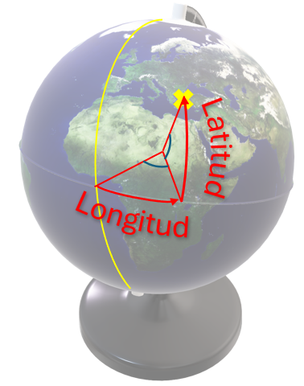

Sistema de coordenadas esférico
Se define Latitud como la distancia angular de un punto en la Tierra respecto al ecuador, medida en grados.
- Se expresa en grados (°), minutos (′), y segundos (″) hacia el norte o el sur del ecuador, que es la línea de referencia.
- El ecuador está en los 0° de latitud. El Polo Norte está en los 90°N (norte) y el Polo Sur en los 90°S (sur).
La Longitud es la distancia angular de un punto respecto al meridiano de Greenwich, también medida en grados.
- Se expresa en grados, minutos, y segundos hacia el este o el oeste del meridiano de Greenwich, que es la línea de referencia (0° de longitud).
- La longitud varía entre 0° y 180° hacia el este o el oeste. El hemisferio oriental (este) va de 0° a 180°E y el hemisferio occidental (oeste) de 0° a 180°W.
